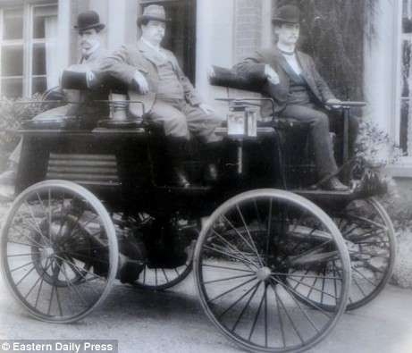
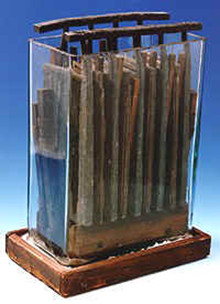
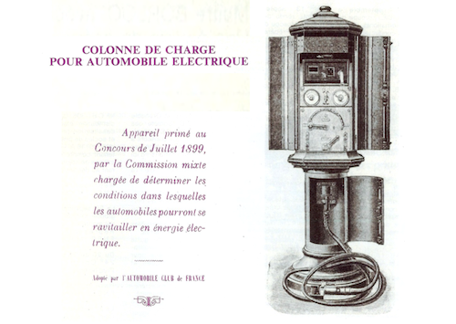
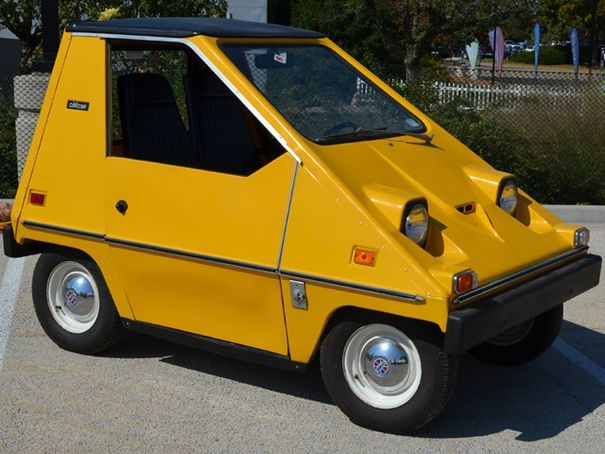

L'histoire de la première voiture électrique
Souvent présentée comme le véhicule de demain, la voiture électrique a en réalité un lointain passé qui remonte aux débuts de l'automobile.
La toute première voiture électrique date de 1834. Le moteur à explosion, a vu son émergence plus tard, en 1861. La première commercialisation d'un véhicule électrique date de 1852. L'invention en 1859 de la batterie rechargeable au plomb acide par Gaston Planté permet à la voiture électrique d'avoir un succès encore jamais égalé à notre siècle.
Batterie rechargeable au plomb acide par Gaston Planté
La « Jamais Contente » de Camille Jenatzy bat le record de vitesse en 1899 en dépassant les 100 km/h.

À l'époque, 38% du marché américain de l'automobile est capté par les véhicules électriques.
Qui dit voiture électrique dit point de recharge... sauf qu'à l'époque, on parle de colonne de charge pour automobile électrique.
Le modèle prévoit déjà une intégration élégante dans le cadre urbain avec son format proche des boîtes aux lettres. Pour recharger ses accumulateurs, l'utilisateur doit mettre un jeton dans le compteur, fermer les coupe-circuits intérieurs, l'interrupteur bipolaire et choisir avec le commutateur du rhéostat l'intensité de charge (de 25 à 80 A) à fournir à la batterie.
Dans les années 1920, le thermique bon marché, meilleur en autonomie et en poids, supplante l'électrique. Depuis cette époque, et tout au long du siècle, la voiture électrique devient une prophétie jamais accomplie. C'est en 1973 que l'on s'intéresse à nouveau à la propulsion électrique : suite au choc pétrolier, l'importance d'une alternative au pétrole accompagnée d'une prise de conscience écologique donne un nouveau souffle au développement du véhicule électrique. Des prototypes sont créés et commercialisés, dont la CityCar en 1974 aux États Unis, qui atteint les 48 km/h et les 64 km d'autonomie.
CityCar commercialisé en 1974 aux Etats-Unis :
Cependant le prix du pétrole retombe et les ventes de véhicules électriques ne décollent pas. Malgré un deuxième choc pétrolier, personne ne semble vouloir payer pour un véhicule moins performant et avec très peu infrastructures.
Des actions politiques prennent place dans le monde, dont l’« Electric and Hybrid Vehicle Research, Development, and Demonstration Act », adopté par le Congrès américain en 1976, afin de pousser la recherche à développer de nouvelles batteries et de nouvelles voitures électriques.
En 1990, un grand pas est franchi avec la mise en place en Californie du Zero Emission Vehicle (ZEV) qui impose aux grands constructeurs américains de réaliser au moins 2% de leurs ventes avec des véhicules zéro émission en 1998. General Motors sort l'EV1 (première voiture électrique de série produite par General Motors aux États-Unis). Les 2% du ZEV passe à 5% en 2001 et 10% en 2003. D'autres régions suivent le même mouvement.
La France s'étant fixé l'objectif d'équiper 5% de sa flotte des villes en électrique d'ici 1999. Pour la deuxième fois après le premier choc pétrolier, on croit à une croissance massive du véhicule électrique. Mais face à l'échec commercial des modèles électriques en raison du manque d’infrastructures et du prix élevé de la voiture électrique, l'Etat et les développements des véhicules électriques sont abandonnés.
Aujourd'hui, le véhicule électrique est devenu une réalité. Les principaux constructeurs automobiles, à l'image de Renault avec la ZOE en 2013, ont développé un modèle 100% électrique. Les installations de bornes de recharge sont aujourd'hui de plus en plus nombreuses facilitant une meilleure intégration de la voiture électrique dans le monde actuel.